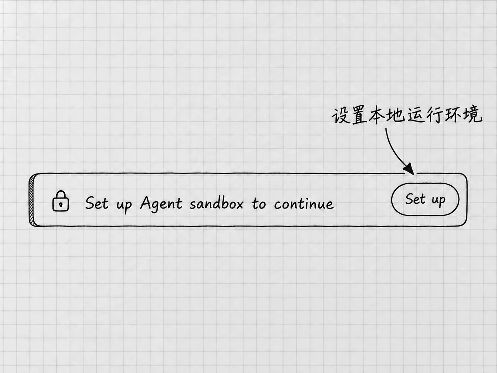

1-快速下载
安装应用，进入Codex
这一章把应用准备好：选对下载入口，完成安装和登录，进入Codex。Windows和Mac的安装条件分别说明；登录以后，两种电脑可以沿着同一条主线学习。
先记住上一章的区别：安装的是桌面应用，Codex是进入应用后选择的工作入口。官方页面中可能看到ChatGPT桌面应用的名称，而下载文件或链接中仍带有Codex字样。选择时以官方页面列明的平台和支持条件为准。
从官方入口下载
按自己的电脑选择下面的链接。直接链接无法打开时，使用同一行的官方说明页，找到当前下载入口。
| 电脑 | 直接下载 | 官方说明 |
|---|---|---|
| Windows | 下载Windows安装程序 | Windows应用说明 |
| 使用Apple芯片的Mac | 下载Mac安装包 | 桌面应用下载页 |
Windows链接使用Microsoft的分发服务，Mac链接指向OpenAI的安装包。今后下载地址发生变化，也从这些官方说明页寻找新入口。
Windows原生运行以Windows 11为推荐环境。官方对较新且完整更新的Windows 10提供尽力支持，并说明至少需要1809版本。落在这个范围内的电脑，首次设置仍可能因设备情况而失败；公司或学校管理的电脑还可能限制安装和本地运行。
Mac下载页标注的 Apple Silicon 指Apple芯片。从苹果菜单进入「关于本机」，查看「芯片」一栏；使用Intel的Mac显示的是处理器信息。上面的安装包只适用于Apple芯片。系统提示不兼容时，回官方下载页核对适用条件。
本书默认你已有可用的付费账号，沿用即可。API密钥、终端、Git和编程环境，现在都用不着准备。
Windows：安装后打开应用
运行取得的官方安装程序，按引导完成安装，再打开应用。Codex支持直接在Windows中运行；WSL是另一条可选路线，它用于在Windows上提供Linux环境，本书入门不使用它。官方资料中面向开发者的Git、Python、Node.js等工具，整理几份备忘时用不上，可以先不装。
Mac：安装后打开应用
打开从官方入口取得的安装包，按其中引导完成安装，再启动应用。具体安装动作以当前安装包和系统提示为准。
如果系统提示芯片或系统版本不兼容，先查下载条件；如果提示安装文件损坏，可以重新从官方入口下载，看问题是否仍然出现。公司管理的Mac可能需要管理员批准安装，这属于设备条件，与账号是否可用分开判断。
Windows的Agent sandbox设置有自己的平台流程，Mac上没有同一套Set up步骤。之后任务访问文件时遇到的请求，按当时显示的对象和目的判断。
登录以后，回应用确认账号
在未登录页面选择 Continue to sign in，按打开的浏览器页面登录已有ChatGPT账号。浏览器若已经登录另一个账号，先核对正在使用的是谁的账号，再继续。
这个过程分成两段：浏览器确认你的身份，再把登录结果交回桌面应用。因此，浏览器显示成功后，还要回到桌面应用，确认登录页已经消失，并从个人菜单查看当前账号。
组织账号还要核对当前工作区。这里的工作区是账号所属的使用和管理范围，例如个人范围或组织提供的范围。不同范围可能有不同的功能政策。后面还会说到电脑上存材料的文件夹，那是另一回事。
如果页面还提供API密钥等其他登录方式，本书继续使用ChatGPT账号。API密钥用于另一种接入方式，入门阶段用不着创建。密码和密钥也不要发到聊天里。
登录成功，说明应用已经认出你是谁。Windows的运行环境是否设置好、组织是否允许某项功能、当前任务能访问哪些文件，是另外三件事，要分别确认。分清这些条件，排查问题时才不会一直重做已经成功的那一步。
进入Codex，准备第一条消息
登录后，在应用中的 ChatGPT 下拉菜单里选择 Codex。这里选的是入口；模型在进入任务后另行选择。
应用里的 New chat（新聊天）用来开始一项工作。chat是围绕一件事展开的对话，本书通常称它为「任务」。这里先认出入口；下一章选好工作文件夹以后，再从对应项目开始任务。
确认已经进入Codex，就可以进入下一章。下一章先讲怎样打开项目文件夹，确认Codex在哪里工作，再用一条短消息熟悉交流。第4章接着读取这份文件夹中的材料，整理并保存结果。
Windows：开始本地工作时，如果出现设置提示

图：Windows出现设置横幅时，从Set up进入本地沙箱配置；图中不表示设置已经成功。
在第3、4章开始本地工作时，如果应用显示 Set up Agent sandbox to continue，并提供 Set up，再按本节设置；尚未出现提示时，继续下一章，到时候再回来看。
Codex可能读写文件，也可能运行用来处理文件的程序。电脑需要给这些操作划定范围，限制它们能够接触的文件和网络资源。这层运行限制叫沙箱。你在这里做的是配置本地运行环境，与安装应用、登录账号是不同的步骤。
看到提示后，从Set up进入设置。官方推荐的原生沙箱配置需要管理员批准。这次批准只用于建立受限制的运行环境，以后的任务并不因此获得管理员权限。在自己有权管理的电脑上，核对请求来自刚刚启动的应用，再按系统提示继续。设置完成后，回到刚才的项目任务，继续原来准备发送的要求。
如果是组织管理的设备，设置可能被本地账号、文件访问或其他设备政策拦住。保留错误原文，请管理员协助；这类设备问题靠重新登录ChatGPT账号通常解决不了。官方还提供隔离能力较弱的后备模式，组织也可能限制它，具体以Windows沙箱说明为准。
有时错误会提到 winget。它是Windows中用于获取和安装软件的工具，首次设置可能需要它。遇到缺少它的提示时，按上述官方排障页检查Windows更新或Windows Package Manager。
设置受阻时，有人会想改选 Full access（完全访问）。它改变的是任务的访问权限，不能代替正确配置运行环境。权限怎样选择，第7章专门讲。
以后怎样核对设置与更新
遇到需要调整的选项，可以打开 Settings（设置）。默认快捷键是Windows的 Ctrl+,、Mac的 ⌘,。设置中提供键盘快捷键页面 Keyboard Shortcuts，可以按名称查找命令，并查看当前按键；书中的默认键位若与你的电脑不同，就在这里核对。
桌面应用通常会自行检查并安装更新，内置更新默认启用。组织也可能统一管理更新，关闭应用自己的更新方式。此时在 Settings → General → In-app updates 可以看到 Managed 等受管理提示，需要遵循组织的更新安排。
所以，菜单里有 Check for Updates（检查更新），还要看这台电脑是否允许应用自行更新。判断桌面应用新不新，也别拿网上某个CLI版本号来比：CLI和桌面应用是不同入口，版本可能不同。
按钮位置和功能开放会变化，任何教程都可能与你眼前的界面有出入。某个入口没有出现时，先核对当前应用、账号与组织条件，再看官方更新说明。
停在哪一步，就从那一步查
| 当前情况 | 先核对什么 |
|---|---|
| 无法下载或安装 | 使用对应平台的官方入口；核对系统、芯片和组织设备政策，保留错误原文 |
| 点击登录后没有看到页面 | 查看浏览器是否另开了登录标签；仍没有时，回应用重新发起登录 |
| 浏览器成功，应用仍停在登录页 | 回应用确认是否收到登录结果；若未返回，从应用重新发起登录，并核对浏览器中的账号 |
| 已登录却找不到预期入口或模型 | 核对账号与工作区，再查官方可用条件；组织账号向管理员确认访问权限 |
| Windows首次设置失败 | 查看管理员批准、设备政策以及错误是否提到缺少组件，再按沙箱说明排查 |
| 无法自行更新 | 查看General中的更新项是否受组织管理，按实际提示处理 |
求助时说清电脑平台、已经完成的步骤和错误原文；知道应用版本的话一并提供，版本号要取自桌面应用本身。这些信息能让人分清是安装、登录、本地设置还是功能开放的问题。求助材料里不放密码和登录凭据。